你是无脸男吗？
2
0
1
7
年
3月
29号
你是无脸男吗
幸好你是，幸好你不是
图文 |来源网络 侵删
Ho Bisogno D'amore
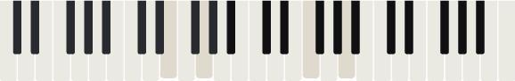

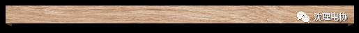
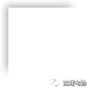
Look
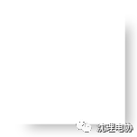
●●●
分享来自Jakarta的Theresia Tarisa做的《Kaonashi Life》。一组关于无脸男的可爱插图。
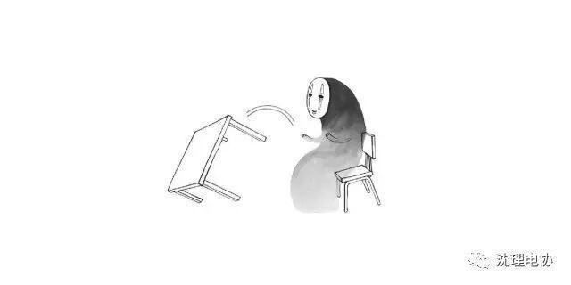
1.Flip Table（掀桌子）
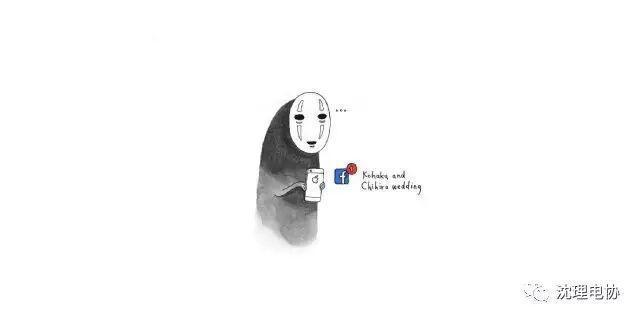
2. Facebook Events（脸书活动）
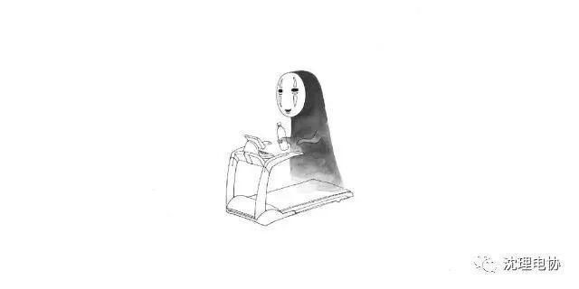
3. Workout（锻炼）
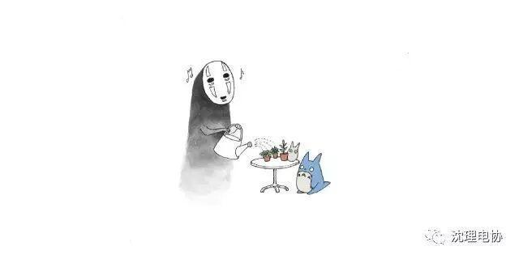
4. Gardening（园艺）
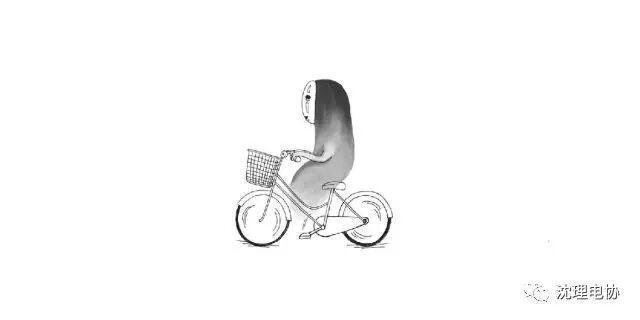
5. Bicycle（踩单车）
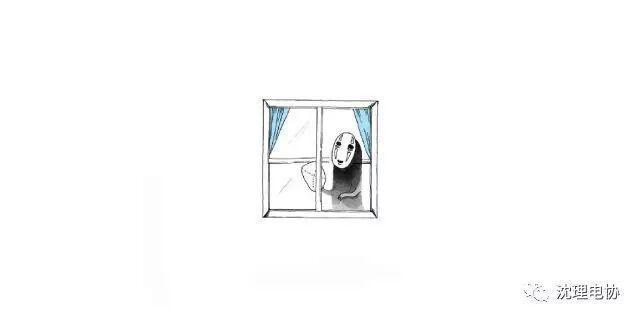
6. Window（擦窗）
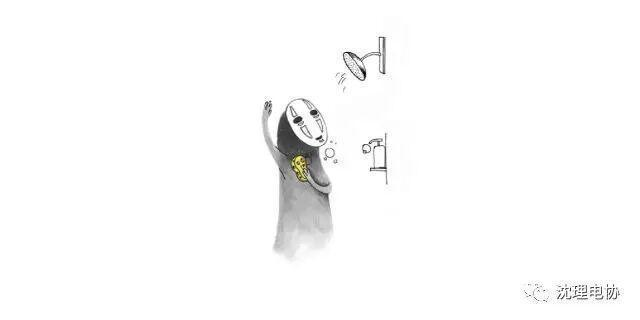
7. Shower（洗澡）
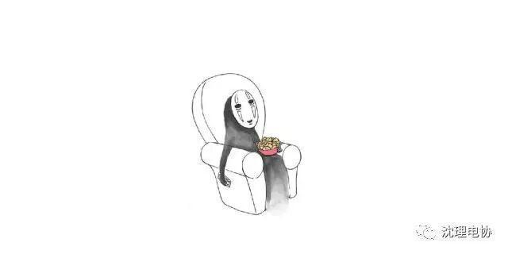
8. Netflix（看肥皂剧）
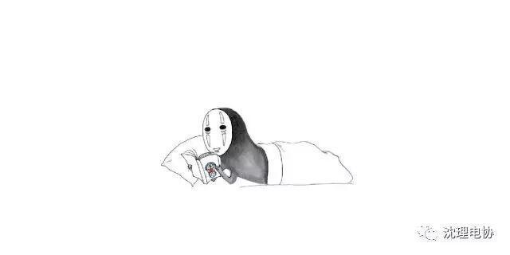
9. Comic（看漫画）
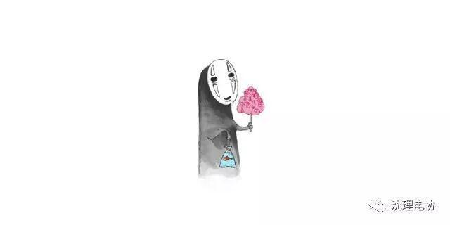
10. Festival（节假日）
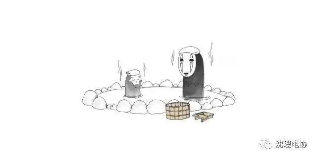
11. Onsen（泡温泉）
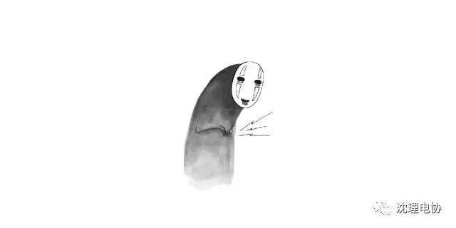
12. Stomachache（胃痛）
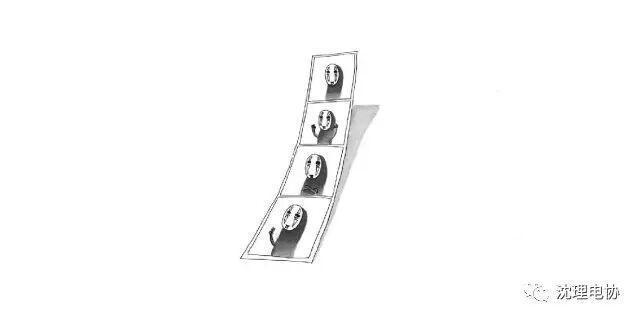
13. Photobox（自拍证件照）
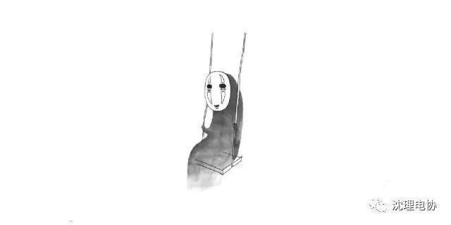
14. Swing （荡秋千）
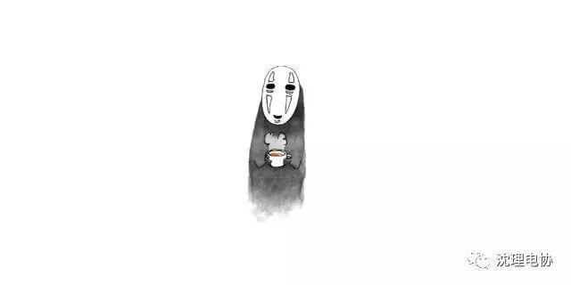
15. Latte（喝拿铁）
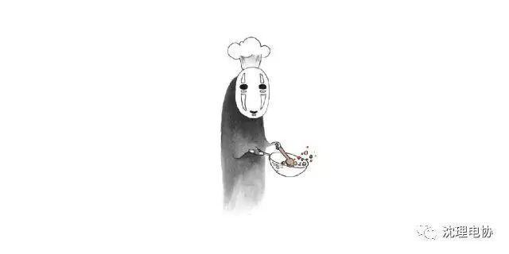
16. Chef（下厨）
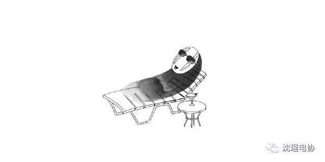
17. Sunbath（日光浴）
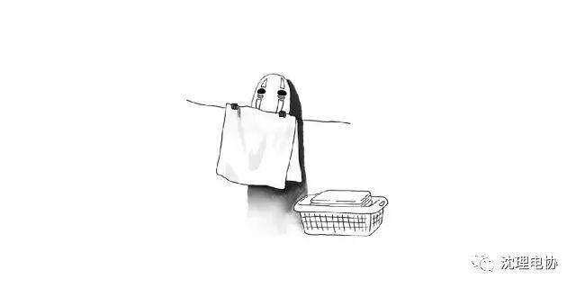
18. Laundry（洗衣）
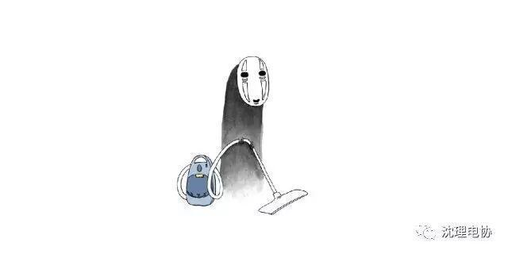
19. Vacuum（吸地）
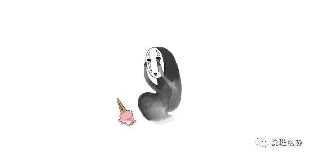
20. Ice Cream（冰激淋）
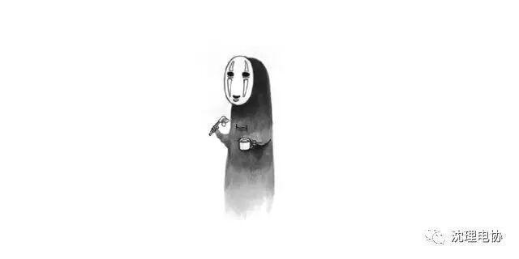
21. Toothbrush（刷牙）
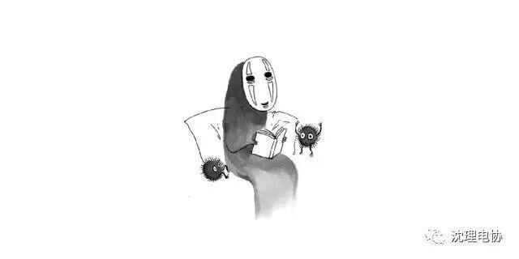
22. Reading（阅读）
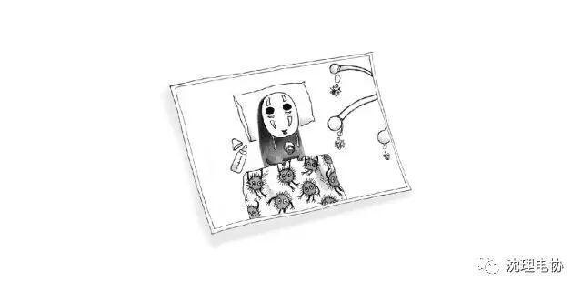
23. Memories（回忆）
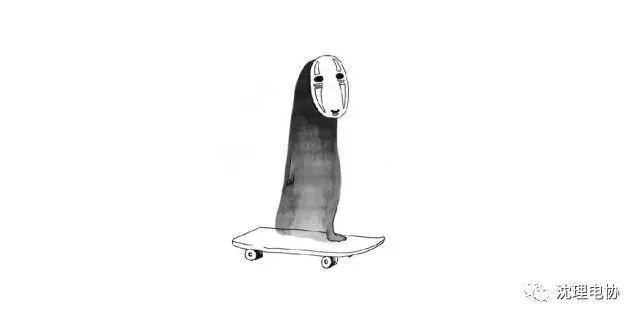
24. Board（踩滑板）
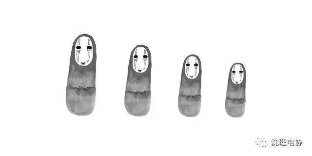
25. Matryoshka（俄罗斯娃娃）
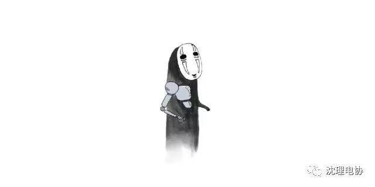
26. Robot（机器人）
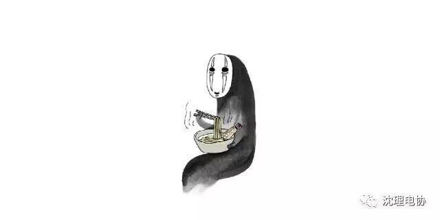
27. Udon（吃乌冬）
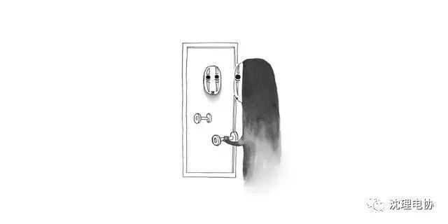
28. Fitness（健身）
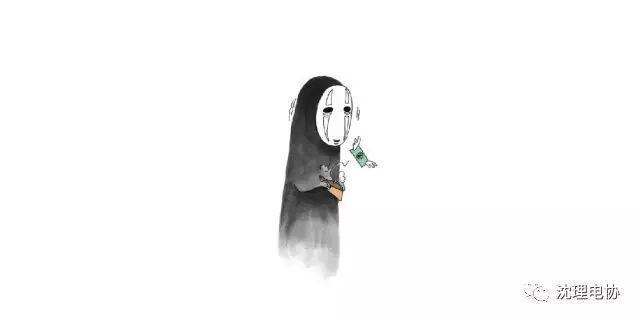
29. Broke（破产）
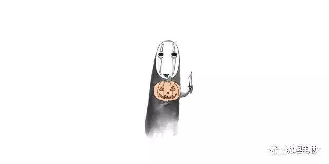
30. Jack 'o Lantern（南瓜灯）
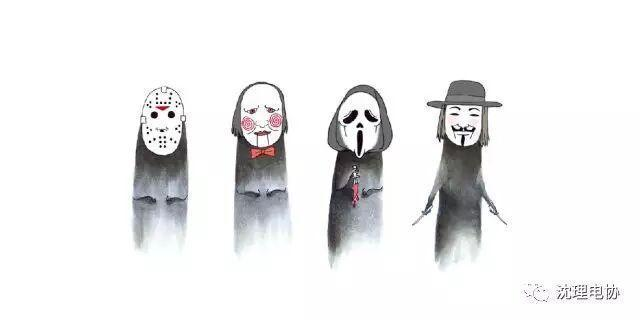
31. Costumes（变装）
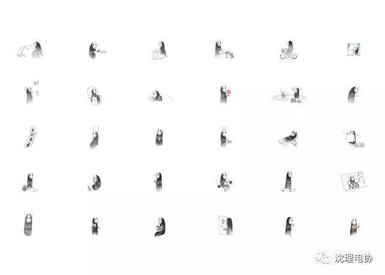
作者behance链接，内有Linkedln/Pinterest/Tumblr/instagram账户连接
https://www.behance.net/theresiatarisa
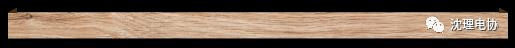
Think
yes and no
无脸男，《千与千寻》里的角色。百度百科说，它是一名神秘孤独的鬼怪，全身黑色，头带一个白色面具。对千寻有好感，最后留在了钱婆婆那里帮忙，有了归宿。
无脸的意义不就是好像没有存在感，没有身份确认么。戴着让人看起来有点害怕的面具，其实心里还是可以爱人的。
虽然没有面孔，但它有着本性善良却迷失自我的众生相。畏惧寂寞，但依旧被冷落，独自孤单；想得到认同，不得方法被欲望占据，更加空虚；渴望温暖，却不懂如何表达，失去爱的能力。
你是无脸男吗？
幸好你是。
你在黑暗中伫立观望，独自一人徘徊，人来人往你却一直被忽视。
于是有那么一个人为你打开一道门。“你站住那里不怕淋湿吗？这扇门我就不关了哦”。茫茫人间，你遇见了一束光，穿过你孱弱的灵魂。尼采说：“那种突然疯狂的时刻，寂寞的人想要拥抱随便哪个人。”
你心里开始有了一个最珍爱的人，但是你很笨拙，你不太明白如何向对方表达爱。
你真心诚意地对心里那个人，你会给出你所有的一切。只要你要，只要我有。
你喜欢某个人，但是你不懂得那个人真正想要的是什么，只是按照自己幼稚的想法一味付出，那些所谓的“爱”不过是种占有欲。
你最终懂得默默陪伴。如田维的《花田半亩》写到：“是否，在你的青春里，也有一个寂静的人，在人群之中将你的所有悉心珍藏？是否，也有一双你从未察觉的眼，跟随着你，让你就这么轻易，将他所有关于青春的回忆霸占？就让这寂静的爱成为一生的秘密，归于尘土。或者，直到某天，时光老去，有什么人对你说起，他曾经爱你。”
幸好你是啊，虽然经历过那么多的孤独，苦痛，迷茫后，仍然选择相信这个世界的美好和别人的善良，终归有一个完满的归宿。
幸好你不是。
你内心强大，不会把安全感建立在别人身上，你不往人群中多靠近一寸寻找存在感，你知道自己自私又孤独，但你偶尔还享受这份落寞。尼采说：“谁终将声震人间，必长久深自缄默；谁终将点燃闪电，必长久如云漂泊。”
你可以从自己身上找到乐趣，就像谢耳朵那样，“人穷尽一生追寻另一个人类，共度一生的事，我一直无法理解。或许我自己太有意思，无需他人陪伴。所以，我祝你们在对方身上得到的快乐，与我给自己的一样多”。
你清楚地认识自己。知道自己是谁，是悲观主义还是乐观主义，适合安安静静还是适合快节奏，喜欢或不喜欢什么样的生活方式。你懂自己，也懂他人。
你懂得如何经营自己的生活，哪怕没有无脸男的能力，你也能自豪地说出：“我若盛开，清风自来”。
你自己就是一束光，你也可以隐于黑暗。
你有爱的能力，也有爱的勇气。
幸好你是，幸好你不是。
其实啊，每个人都有两面性，没有绝对的是，也没有绝对的不是。是与不是都是可以变化的。取决于你。
yes and no.
那么，你想成为什么样的人呢？
《Ho Bisogno D'amore》中文歌词
很多个夜晚，关上灯
就孤单一个人呆着
我望着黑暗没有心思地听着收音机
是为什么
在回忆我的人生然后告诉自己
继续现在还是改变
我试着寻找解决这些错的办法
是为什么
我需要爱来释放我的心
在一个比我转的更快的世界里
去寻找那个我想象里的感觉
我需要你
告诉我你在哪里
我呆在那 边看着镜子里的自己边问
要是将来的某一天我遇上你
也许在这个深夜你也想对我说
为什么
你需要爱吗？去释放你的心
在一个比你转的更快的世界里
去寻找那个你想象里的感觉
你需要我吗？
告诉我你在哪里
你需要爱吗？
我需要你
我需要爱来释放我的心
在一个比我转的更快的世界里
去寻找一种感觉
很小也很大
我需要你
告诉我你在哪
我需要爱 我需要你
你也需要我吗？
告诉我你在哪
我需要你
告诉我你在哪

编辑：范淼
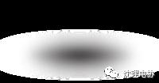
看见 (look) 和思考 (think)
是一对好朋友，就像电协君一样